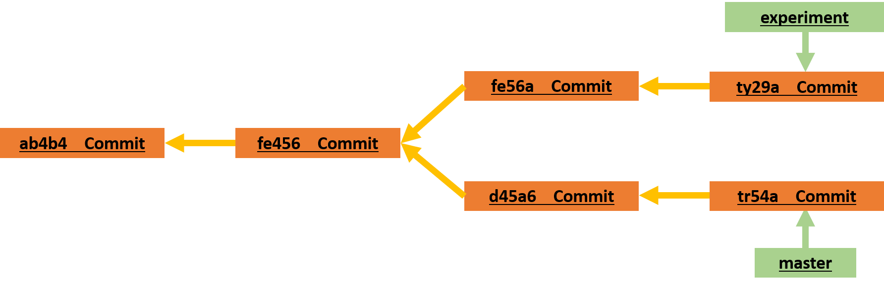

Plumbing Tools
Plumbing tools in Git are low-level commands that interact directly with the Git repository's internal data structures, providing access to detailed information about commits, branches, and other objects. They are primarily used for scripting, automation, or accessing detailed repository information that may not be readily available with porcelain commands (higher-level commands). They provide direct access to the Git object database and are essential for building more complex Git workflows and tools.
git rev-parse
This command is used to parse Git references such as branch names, commit hashes, tags, and symbolic references into commit identifiers or other meaningful information. It can be used to retrieve the SHA-1 hash of commits, tags, and other Git objects, or to resolve symbolic references like branch names to their corresponding commit hashes.
git rev-parse HEAD # Get the commit hash of the current HEAD
git rev-parse main # Get the commit hash of the 'main' branch
git rev-parse v1.0 # Get the commit hash of the tag 'v1.0'
git reflog
This command displays the commit history of the local repository's HEAD reference, showing a chronological list of all recent HEAD movements and associated commit identifiers. It's useful for recovering lost commits or understanding changes to the repository's history, especially after potentially destructive operations like rebasing or resetting.
git reflog # Show the reflog for the current branch
git reflog main # Show the reflog for the 'main' branch
$ git reflog
734713b HEAD@{0}: commit: Fix refs handling, add gc auto, update tests
d921970 HEAD@{1}: merge phedders/rdocs: Merge made by the 'recursive' strategy.
1c002dd HEAD@{2}: commit: Add some blame and merge stuff
1c36188 HEAD@{3}: rebase -i (squash): updating HEAD
95df984 HEAD@{4}: commit: # This is a combination of two commits.
1c36188 HEAD@{5}: rebase -i (squash): updating HEAD
7e05da5 HEAD@{6}: rebase -i (pick): updating HEAD
Every time your branch tip is updated for any reason, Git stores that information for you in this temporary history. You can use your reflog data to refer to older commits as well. For example, if you want to see the fifth prior value of the HEAD of your repository, you can use the @{5} reference that you see in the reflog output:
git show HEAD@{5}
You can also use this syntax to see where a branch was some specific amount of time ago. For instance, to see where your master branch was yesterday, you can type:
git show HEAD@{yesterday}
That would show you where the tip of your master branch was yesterday. This technique only works for data that’s still in your reflog, so you can’t use it to look for commits older than a few months.
To see reflog information formatted like the git log output, you can run:
git log -g master
It’s important to note that reflog information is strictly local — it’s a log only of what you’ve done in your repository. The references won’t be the same on someone else’s copy of the repository; also, right after you initially clone a repository, you’ll have an empty reflog, as no activity has occurred yet in your repository. Running git show HEAD@{2.months.ago} will show you the matching commit only if you cloned the project at least two months ago — if you cloned it any more recently than that, you’ll see only your first local commit. Think of the reflog as Git’s version of shell history
Escaping braces in PowerShell
When using PowerShell, braces like { and } are special characters and must be escaped. You can escape them with a backtick ` or put the commit reference in quotes:
git show HEAD@{0} # will NOT work
git show HEAD@`{0`} # OK
git show "HEAD@{0}" # OK
Ancestry References
^ (caret)
The other main way to specify a commit is via its ancestry. If you place a ^ (caret) at the end of a reference, Git resolves it to mean the parent of that commit. You can see the previous commit by specifying HEAD^, which means “the parent of HEAD”:
git show HEAD^
Escaping the caret on Windows On Windows in cmd.exe, ^ is a special character and needs to be treated differently. You can either double it or put the commit reference in quotes:
$ git show HEAD^ # will NOT work on Windows
$ git show HEAD^^ # OK
$ git show "HEAD^" # OK
~ (tilde)
The other main ancestry specification is the ~ (tilde). This also refers to the first parent, so HEAD~ and HEAD^ are equivalent. The difference becomes apparent when you specify a number. HEAD~2 means “the first parent of the first parent,” or “the grandparent” — it traverses the first parents the number of times you specify.
git show HEAD~2
You can also combine these syntaxes — you can get the second parent of the previous reference (assuming it was a merge commit) by using HEAD~3^2, and so on.
Commit Ranges
This is particularly useful for managing your branches — if you have a lot of branches, you can use range specifications to answer questions such as, “What work is on this branch that I haven’t yet merged into my main branch?”
Double Dot
The most common range specification is the double-dot syntax. This basically asks Git to resolve a range of commits that are reachable from one commit but aren’t reachable from another.

Say you want to see what is in your experiment branch that hasn’t yet been merged into your master branch. You can ask Git to show you a log of just those commits with master..experiment — that means “all commits reachable from experiment that aren’t reachable from master.”
git log master..experiment
ty29a
fe56a
If, on the other hand, you want to see the opposite — all commits in master that aren’t in experiment — you can reverse the branch names. experiment..master shows you everything in master not reachable from experiment:
git log experiment..master
tr54a
d45a6
git log origin/master..HEAD
This command shows you any commits in your current branch that aren’t in the master branch on your origin remote. If you run a git push and your current branch is tracking origin/master, the commits listed by git log origin/master..HEAD are the commits that will be transferred to the server. You can also leave off one side of the syntax to have Git assume HEAD. For example, you can get the same results as in the previous example by typing git log origin/master.. — Git substitutes HEAD if one side is missing.
Multiple Points
The double-dot syntax is useful as a shorthand, but perhaps you want to specify more than two branches to indicate your revision, such as seeing what commits are in any of several branches that aren’t in the branch you’re currently on. Git allows you to do this by using either the ^ character or --not before any reference from which you don’t want to see reachable commits. Thus, the following three commands are equivalent:
git log refA..refB
git log ^refA refB
git log refB --not refA
git log refA refB ^refC
git log refA refB --not refC
Triple Dot
The last major range-selection syntax is the triple-dot syntax, which specifies all the commits that are reachable by either of two references but not by both of them.
If you want to see what is in master or experiment but not any common references, you can run:
git log master...experiment
A common switch to use with the log command in this case is --left-right, which shows you which side of the range each commit is in.
git log --left-right master...experiment
< tr54a
< d45a6
> ty29a
> fe56a
git cat-file
This command provides various information about Git objects (commits, trees, tags, or blobs). It can be used to display the contents, type, size, or even raw data of a specific Git object.
git cat-file -p HEAD # Show the contents of the commit pointed to by HEAD
git cat-file -t v1.0 # Show the type of the tag 'v1.0'
git hash-object
This command computes the SHA-1 hash of a given file or data and optionally stores it in the Git object database. It's commonly used for hashing file contents before storing them as Git objects or verifying data integrity.
git hash-object file.txt # Compute the SHA-1 hash of 'file.txt'
git ls-tree
This command lists the contents of a tree object (directory) in the Git object database. It can be used to view the files and subdirectories stored within a specific tree object.
git ls-tree HEAD # List the contents of the commit pointed to by HEAD
git update-ref
This command allows you to update the references in the Git repository, such as branches or tags, directly. It's commonly used for advanced Git operations or scripting workflows that involve manipulating references.
git update-ref refs/heads/main <commit> # Update the 'main' branch to point to a specific commit
git commit-tree
This command creates a new commit object based on the provided tree object and parent commit(s) and optionally stores it in the Git object database.It's typically used in advanced Git workflows or scripting scenarios where manual creation of commits is necessary.
git commit-tree <tree> -p <parent> -m "Commit message" # Create a new commit object with the given tree and parent commit
git ls-remote
The git ls-remote command allows you to view references (branches, tags, and heads) in a remote Git repository without cloning it. It shows the commit hashes associated with each reference, providing a quick way to inspect the state of a remote repository.
git ls-remote [<options>] <repository> [<refs>]
<repository>: The remote URL or name (likeorigin).<refs>: Optional. Filter results by specific branches or tags.<options>: Additional flags to modify the output.
List All Remote References
git ls-remote https://github.com/example/repo.git
a1b2c3d4e5f6g7h8i9j0k1l2m3n4o5p6q7r8 refs/heads/main
b2c3d4e5f6g7h8i9j0k1l2m3n4o5p6q7r8s9 refs/heads/feature-branch
c3d4e5f6g7h8i9j0k1l2m3n4o5p6q7r8s9t0 refs/tags/v1.0
- Left column: Commit hash of the reference.
- Right column: The reference name (
headsfor branches,tagsfor tags).
Show Only Branches
To list only remote branches:
git ls-remote --heads origin
a1b2c3d4e5f6g7h8i9j0k1l2m3n4o5p6q7r8 refs/heads/main
b2c3d4e5f6g7h8i9j0k1l2m3n4o5p6q7r8s9 refs/heads/feature-branch
Show Only Tags
To list only tags:
git ls-remote --tags origin
c3d4e5f6g7h8i9j0k1l2m3n4o5p6q7r8s9t0 refs/tags/v1.0
Filter by Specific Reference
To check the hash of a specific branch or tag:
git ls-remote origin main
a1b2c3d4e5f6g7h8i9j0k1l2m3n4o5p6q7r8 refs/heads/main
Useful Options
| Option | Description |
|---|---|
--heads |
Show only branch references (refs/heads/). |
--tags |
Show only tag references (refs/tags/). |
--refs |
Show only references, omitting HEAD and symrefs. |
--quiet |
Suppress output, useful for checking access silently. |
Comparison with git fetch
| Feature | Plumbing (git ls-remote) |
Porcelain (git fetch) |
|---|---|---|
| Purpose | View remote refs without downloading objects. | Download refs and objects from the remote. |
| Network Usage | Minimal (only ref data). | Higher (downloads commits and objects). |
| Speed | Faster, especially for large repositories. | Slower due to object transfer. |
| Local Ref Update | Does not update local refs. | Updates remote-tracking branches (origin/*). |
| Example Command | git ls-remote origin |
git fetch origin |